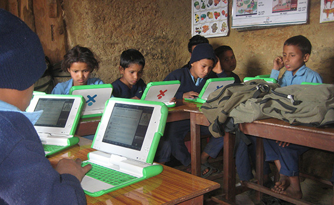
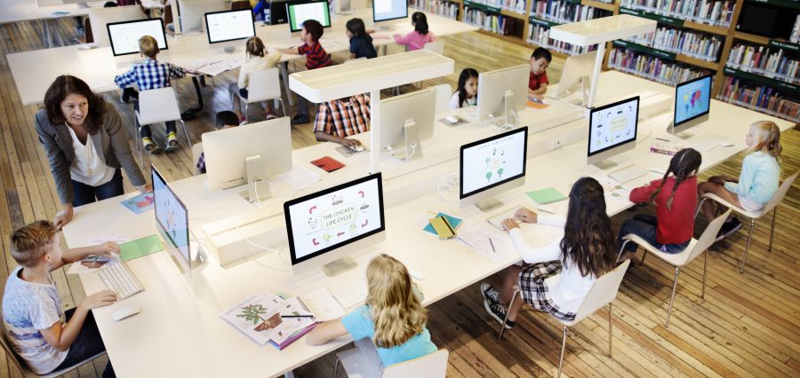

Technology has huge impact on students life. Some students might get distracted by
technologies but if it is used for a purpose than technologies can be transformed
from a distraction to an effective learning source. Some fruitful benifits of
technologies are shortly explained below.
1. Affords better access to resources
 Students in rular areas.
With the help of internet connection, students can have unlimited access to informatio.
This allows students to access more learning materials, helps to create virtual group and
classrooms for discussion. With the help of technology students can learn beyond the physical
classrooms in proper guidence by teachers or instructors.
2. Improves Students Engagement
Students Engagements In Learning
Education technology makes learning interactive and helps students to engage with course materials.
Learning in virtual displays is comparatively more beneficial than learning in papers. Sudents can
easily memorize the course with the help of visualization and hence makes learning fun and engaging.
3. Encourage Self-Paced Learning
Student self-learning
In comparision to studying in physical classromm, learning with the help of technologies is much more effective.
Some students may lack to understand course during physical class but with online assessment and always on unlimited
resources, students can gain deeper understanding of their confusion along with proper guideness of teachers.
Conclusion
Overall, we can conclude that if technology is used with good intention it is beneficial for students to learn easily and convinently.
Despite of misusing the technologies and complaining about it, it is better to move on with era and develop ourself with new methods of Learning.